SingCellaR incorporates multiple integrative methods. scRNA-seq from 5 samples generated by Psaila et al., will be used as the example for the integration.
First, SingCellaR objects from the individual analysis will be combined. The workflow below shows how to combine multiple SingCellaR objects.
library(SingCellaR)
human_HSPCs <- new("SingCellaR")
human_HSPCs@dir_path_SingCellR_object_files<-"../SingCellaR_example_datasets/Psaila_et_al/SingCellaR_objects/"
human_HSPCs@SingCellR_object_files=c("Sample1.SingCellaR.rdata",
"Sample6.SingCellaR.rdata",
"Sample11.SingCellaR.rdata",
"Sample20.SingCellaR.rdata",
"Sample21.SingCellaR.rdata")
preprocess_integration(human_HSPCs)##
|
| | 0%[1] "Combining variable/marker genes, clusters info, and UMIs.."
##
|
|============== | 20%
|
|============================ | 40%
|
|========================================== | 60%
|
|======================================================== | 80%[1] "List of mitochondrial genes:"
## [1] "MT-ND1" "MT-ND2" "MT-CO1" "MT-CO2" "MT-ATP8" "MT-ATP6" "MT-CO3"
## [8] "MT-ND3" "MT-ND4L" "MT-ND4" "MT-ND5" "MT-ND6" "MT-CYB"
## [1] "The meta data is processed."
## [1] "The integrated sparse matrix is created."human_HSPCs## An object of class SingCellaR with a matrix of : 33538 genes across 35892 samples.To speed up the integration, we downsample the number of cells to 5,000.
subsample_cells(human_HSPCs,n.subsample = 5000,n.seed = 42)## [1] "Downstream analysis will be performed using the subsampling cells!."human_HSPCs## An object of class SingCellaR with a matrix of : 33538 genes across 5000 samples.In the previous individual sample analysis, poor QC cells had already filtered out. We therefore don’t have to filter out the cells again in this step. However, the function ‘filter_cells_and_genes’ has to be performed to add relevant cell information.
filter_cells_and_genes(human_HSPCs,
min_UMIs=1000,
max_UMIs=80000,
min_detected_genes=500,
max_detected_genes=8000,
max_percent_mito=15,
genes_with_expressing_cells = 10,isRemovedDoublets = FALSE)## [1] "The cells and genes metadata are updated by adding the filtering status."
## [1] "0/5000 cells will be filtered out from the downstream analyses!."SingCellaR allows a user to add more cell information manually to the metadata. Below shows the example of adding sample status ‘healthy’ and ‘MF’ (from healthy donors and myelofibrosis patients).
cell_anno.info<-get_cells_annotation(human_HSPCs)
head(cell_anno.info)## Cell sampleID UMI_count detectedGenesPerCell
## 34020 TAGTACCTCTCTCG-1_Sample21 1_Sample21 14189 3432
## 8826 AAGTTCGCAGGGATAC-1_Sample11 1_Sample11 30928 5344
## 16740 ATATGCCTCAGATC-1_Sample20 1_Sample20 8740 2028
## 7700 TCCTTTCCATCGAAGG-1_Sample6 1_Sample6 16194 3717
## 9091 ACGTAACTCCAAGCTA-1_Sample11 1_Sample11 15175 3691
## 33700 TACGATCTTTATCC-1_Sample21 1_Sample21 16009 3909
## percent_mito data_set IsPassed
## 34020 3.728240 5 TRUE
## 8826 5.842602 3 TRUE
## 16740 4.748284 4 TRUE
## 7700 6.595035 2 TRUE
## 9091 2.840198 3 TRUE
## 33700 3.604223 5 TRUEtable(cell_anno.info$sampleID)##
## 1_Sample1 1_Sample11 1_Sample20 1_Sample21 1_Sample6
## 469 818 1448 1479 786human_HSPCs@meta.data$status[human_HSPCs@meta.data$sampleID=="1_Sample1"]<-"healthy"
human_HSPCs@meta.data$status[human_HSPCs@meta.data$sampleID=="1_Sample6"]<-"healthy"
human_HSPCs@meta.data$status[human_HSPCs@meta.data$sampleID=="1_Sample11"]<-"MF"
human_HSPCs@meta.data$status[human_HSPCs@meta.data$sampleID=="1_Sample20"]<-"MF"
human_HSPCs@meta.data$status[human_HSPCs@meta.data$sampleID=="1_Sample21"]<-"MF"
cell_anno.info<-get_cells_annotation(human_HSPCs)
head(cell_anno.info)## Cell sampleID UMI_count detectedGenesPerCell
## 34020 TAGTACCTCTCTCG-1_Sample21 1_Sample21 14189 3432
## 8826 AAGTTCGCAGGGATAC-1_Sample11 1_Sample11 30928 5344
## 16740 ATATGCCTCAGATC-1_Sample20 1_Sample20 8740 2028
## 7700 TCCTTTCCATCGAAGG-1_Sample6 1_Sample6 16194 3717
## 9091 ACGTAACTCCAAGCTA-1_Sample11 1_Sample11 15175 3691
## 33700 TACGATCTTTATCC-1_Sample21 1_Sample21 16009 3909
## percent_mito data_set IsPassed status
## 34020 3.728240 5 TRUE MF
## 8826 5.842602 3 TRUE MF
## 16740 4.748284 4 TRUE MF
## 7700 6.595035 2 TRUE healthy
## 9091 2.840198 3 TRUE MF
## 33700 3.604223 5 TRUE MFnormalize_UMIs(human_HSPCs,use.scaled.factor = T)## [1] "Normalization is completed!."get_variable_genes_by_fitting_GLM_model(human_HSPCs,mean_expr_cutoff = 0.1,disp_zscore_cutoff = 0.1)## [1] "Calculate row variance.."
##
|
| | 0%
|
|======== | 11%
|
|================ | 22%
|
|======================= | 33%
|
|=============================== | 44%
|
|======================================= | 56%
|
|=============================================== | 67%
|
|====================================================== | 78%
|
|============================================================== | 89%
|
|======================================================================| 100%[1] "Using :12719 genes for fitting the GLM model!"
## [1] "Identified :1326 variable genes"Alternatively, the function ‘get_variable_genes_for_integrative_data_by_fitting_GLM_model’ can take highly variable genes identified from each individual sample into the analysis (see how to use the function below).
(if a user wants to use this option, the comment (#) must be taken out in order to run the function)
#get_variable_genes_for_integrative_data_by_fitting_GLM_model(human_HSPCs,mean_expr_cutoff = 0.05,disp_zscore_cutoff = 0.05)SingCellaR reads in the GMT file that contains the ribosomal and mitochondrial genes and removes these genes from the list of variable genes.
remove_unwanted_genes_from_variable_gene_set(human_HSPCs,gmt.file = "../SingCellaR_example_datasets/Human_genesets/human.ribosomal-mitocondrial.genes.gmt",
removed_gene_sets=c("Ribosomal_gene","Mitocondrial_gene"))## [1] "4 genes are removed from the variable gene set."Here, the plot shows highly variable genes in the fitted GLM model.
plot_variable_genes(human_HSPCs)## [1] "Calculate row variance.."
##
|
| | 0%
|
|======== | 11%
|
|================ | 22%
|
|======================= | 33%
|
|=============================== | 44%
|
|======================================= | 56%
|
|=============================================== | 67%
|
|====================================================== | 78%
|
|============================================================== | 89%
|
|======================================================================| 100%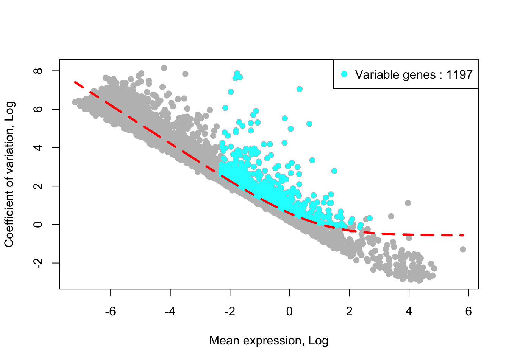
To investigate batch, donor, and sample effects. The analysis without applying integrative methods will be performed.
Top 50 PCs will be calculated using IRLBA method from https://github.com/bwlewis/irlba The parameter “use.regressout.data” is critical. If TRUE, PCA uses the regress out data. If FALSE, PCA uses the normalized data without removing any unwanted source of variations.
runPCA(human_HSPCs,use.components=50,use.regressout.data = F)## [1] "PCA analysis is done!."Next, the number of PCs used for downstream analyses will be determined from the scree plot.
plot_PCA_Elbowplot(human_HSPCs)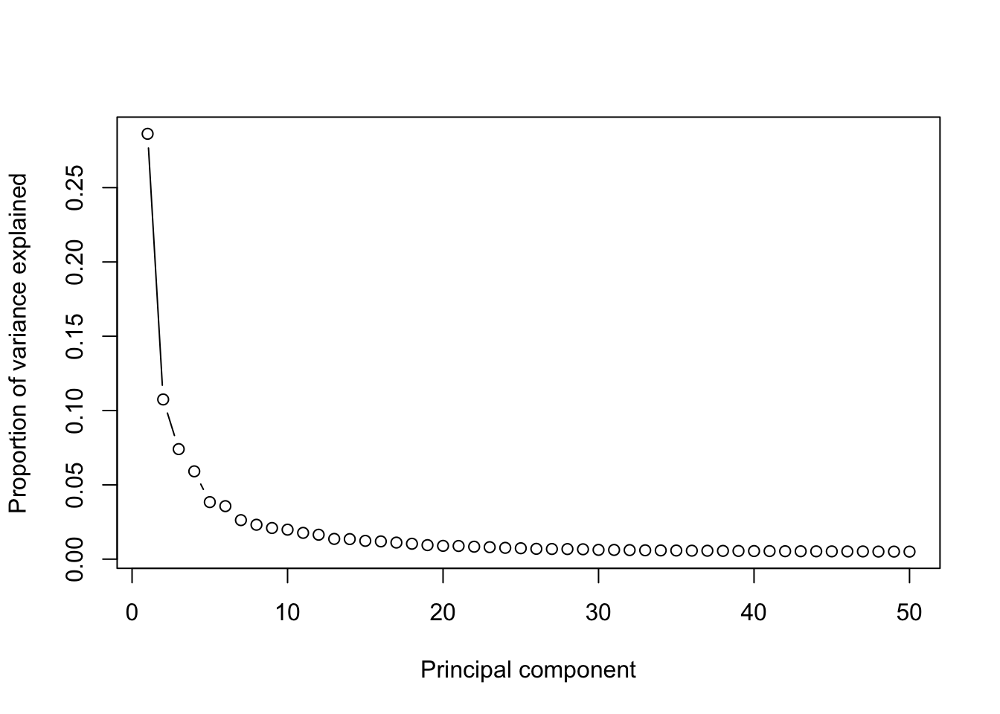
SingCellaR::runUMAP(human_HSPCs,dim_reduction_method = "pca",n.dims.use = 20,n.neighbors = 30,
uwot.metric = "euclidean")## 17:45:50 UMAP embedding parameters a = 1.121 b = 1.057## 17:45:50 Read 5000 rows and found 20 numeric columns## 17:45:50 Using Annoy for neighbor search, n_neighbors = 30## 17:45:51 Building Annoy index with metric = euclidean, n_trees = 50## 0% 10 20 30 40 50 60 70 80 90 100%## [----|----|----|----|----|----|----|----|----|----|## **************************************************|
## 17:45:51 Writing NN index file to temp file /var/folders/c6/_w309xr54n7cphf9nw4x_ms40000gn/T//Rtmpovie3b/filed1126d923401
## 17:45:51 Searching Annoy index using 8 threads, search_k = 3000
## 17:45:51 Annoy recall = 100%
## 17:45:52 Commencing smooth kNN distance calibration using 8 threads with target n_neighbors = 30
## 17:45:52 Initializing from normalized Laplacian + noise (using irlba)
## 17:45:52 Commencing optimization for 500 epochs, with 205146 positive edges
## 17:45:59 Optimization finished## [1] "UMAP analysis is done!."plot_umap_label_by_a_feature_of_interest(human_HSPCs,feature = "sampleID",point.size = 0.5)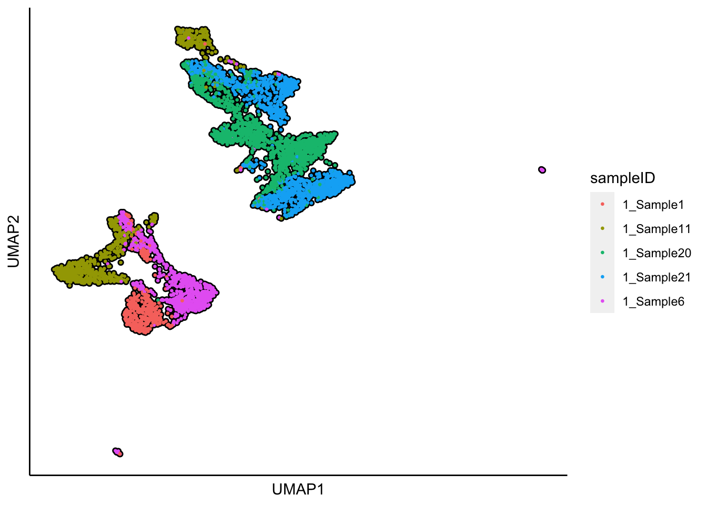 The UMAP plot shows the sample effect.
plot_umap_label_by_a_feature_of_interest(human_HSPCs,feature = "status",point.size = 0.5)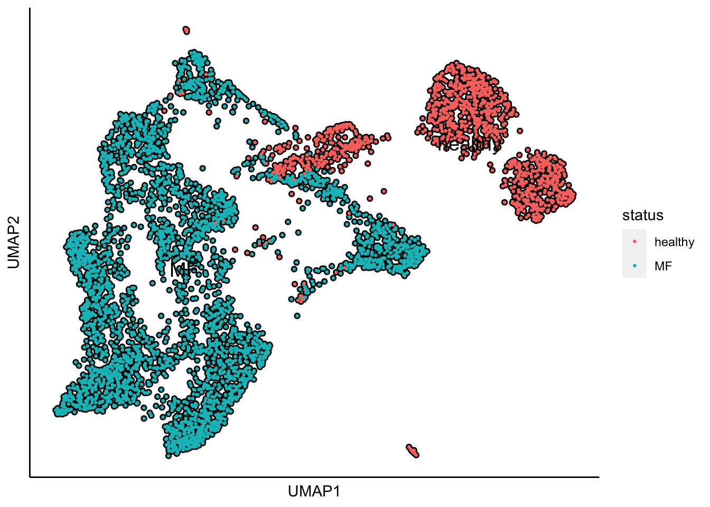
UMAP plot shows the separation of samples by healthy and MF status.
The followings show the workflow of using different integrative methods implemented in SingCellaR.
To run supervised harmony integration, the harmony software must be installed https://github.com/immunogenomics/harmony. Supervised harmony requires clustering information and differential genes across clusters from individual sample as the input.
library(harmony)
runSupervised_Harmony(human_HSPCs,covariates = c("sampleID"),n.dims.use = 20,
hcl.height.cutoff = 0.25,harmony.max.iter = 20,n.seed = 1)## [1] "Processing fGSEA for: cl1_1"
## [1] "Processing fGSEA for: cl2_1"
## [1] "Processing fGSEA for: cl3_1"
## [1] "Processing fGSEA for: cl4_1"
## [1] "Processing fGSEA for: cl5_1"
## [1] "Processing fGSEA for: cl6_1"
## [1] "Processing fGSEA for: cl7_1"
## [1] "Processing fGSEA for: cl8_1"
## [1] "Processing fGSEA for: cl9_1"
## [1] "Processing fGSEA for: cl10_1"
## [1] "Processing fGSEA for: cl11_1"
## [1] "Processing fGSEA for: cl12_1"
## [1] "Processing fGSEA for: cl1_2"
## [1] "Processing fGSEA for: cl2_2"
## [1] "Processing fGSEA for: cl3_2"
## [1] "Processing fGSEA for: cl4_2"
## [1] "Processing fGSEA for: cl5_2"
## [1] "Processing fGSEA for: cl6_2"
## [1] "Processing fGSEA for: cl7_2"
## [1] "Processing fGSEA for: cl8_2"
## [1] "Processing fGSEA for: cl9_2"
## [1] "Processing fGSEA for: cl10_2"
## [1] "Processing fGSEA for: cl11_2"
## [1] "Processing fGSEA for: cl12_2"
## [1] "Processing fGSEA for: cl13_2"
## [1] "Processing fGSEA for: cl14_2"
## [1] "Processing fGSEA for: cl15_2"
## [1] "Processing fGSEA for: cl16_2"
## [1] "Processing fGSEA for: cl1_3"
## [1] "Processing fGSEA for: cl2_3"
## [1] "Processing fGSEA for: cl3_3"
## [1] "Processing fGSEA for: cl4_3"
## [1] "Processing fGSEA for: cl5_3"
## [1] "Processing fGSEA for: cl6_3"
## [1] "Processing fGSEA for: cl7_3"
## [1] "Processing fGSEA for: cl8_3"
## [1] "Processing fGSEA for: cl9_3"
## [1] "Processing fGSEA for: cl10_3"
## [1] "Processing fGSEA for: cl11_3"
## [1] "Processing fGSEA for: cl12_3"
## [1] "Processing fGSEA for: cl13_3"
## [1] "Processing fGSEA for: cl14_3"
## [1] "Processing fGSEA for: cl16_3"
## [1] "Processing fGSEA for: cl17_3"
## [1] "Processing fGSEA for: cl1_4"
## [1] "Processing fGSEA for: cl2_4"
## [1] "Processing fGSEA for: cl3_4"
## [1] "Processing fGSEA for: cl4_4"
## [1] "Processing fGSEA for: cl5_4"
## [1] "Processing fGSEA for: cl6_4"
## [1] "Processing fGSEA for: cl7_4"
## [1] "Processing fGSEA for: cl8_4"
## [1] "Processing fGSEA for: cl9_4"
## [1] "Processing fGSEA for: cl10_4"
## [1] "Processing fGSEA for: cl11_4"
## [1] "Processing fGSEA for: cl12_4"
## [1] "Processing fGSEA for: cl13_4"
## [1] "Processing fGSEA for: cl1_5"
## [1] "Processing fGSEA for: cl2_5"
## [1] "Processing fGSEA for: cl3_5"
## [1] "Processing fGSEA for: cl4_5"
## [1] "Processing fGSEA for: cl5_5"
## [1] "Processing fGSEA for: cl6_5"
## [1] "Processing fGSEA for: cl7_5"
## [1] "Processing fGSEA for: cl8_5"
## [1] "Processing fGSEA for: cl9_5"
## [1] "Processing fGSEA for: cl10_5"
## [1] "Processing fGSEA for: cl11_5"
## [1] "Processing fGSEA for: cl12_5"
## [1] "Processing fGSEA for: cl13_5"
## [1] "Processing fGSEA for: cl14_5"
## [1] "Processing fGSEA for: cl15_5"
## [1] "Processing fGSEA for: cl16_5"
## [1] "Identify : 23 matched and 3 unique (sample-specific) clusters!"
## [1] "26 cluster centers will be used as the pre-assigned clusters for harmony!"
## [1] "Supervised harmony analysis is done!."SingCellaR::runUMAP(human_HSPCs,useIntegrativeEmbeddings = T, integrative_method = "supervised_harmony",n.dims.use = 20,
n.neighbors = 30,uwot.metric = "euclidean")## 17:46:44 UMAP embedding parameters a = 1.121 b = 1.057## 17:46:44 Read 5000 rows and found 20 numeric columns## 17:46:44 Using Annoy for neighbor search, n_neighbors = 30## 17:46:44 Building Annoy index with metric = euclidean, n_trees = 50## 0% 10 20 30 40 50 60 70 80 90 100%## [----|----|----|----|----|----|----|----|----|----|## **************************************************|
## 17:46:44 Writing NN index file to temp file /var/folders/c6/_w309xr54n7cphf9nw4x_ms40000gn/T//Rtmpovie3b/filed11219fc5a31
## 17:46:44 Searching Annoy index using 8 threads, search_k = 3000
## 17:46:44 Annoy recall = 100%
## 17:46:45 Commencing smooth kNN distance calibration using 8 threads with target n_neighbors = 30
## 17:46:46 Initializing from normalized Laplacian + noise (using irlba)
## 17:46:46 Commencing optimization for 500 epochs, with 218976 positive edges
## 17:46:53 Optimization finished## [1] "UMAP analysis is done!."plot_umap_label_by_a_feature_of_interest(human_HSPCs,feature = "sampleID",point.size = 0.5)plot_umap_label_by_a_feature_of_interest(human_HSPCs,feature = "status",point.size = 0.5)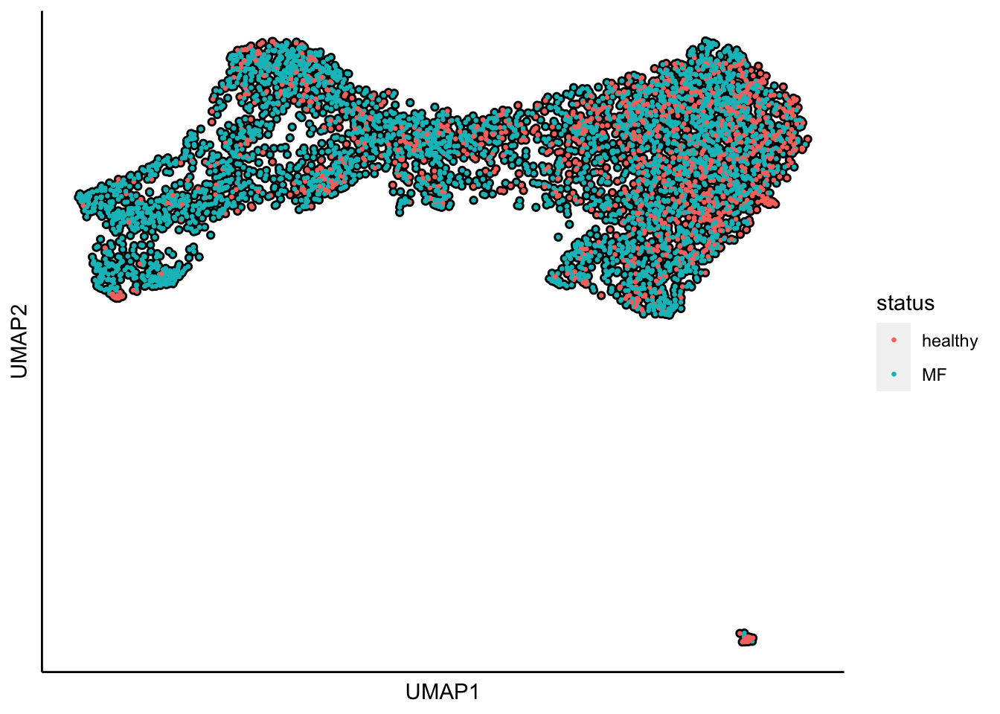
The plot below shows the superimposition of gene scores from erythroid, myeloid, lymphoid, and megakaryocytic gene sets on top UMAP and force-directed graph respectively.
plot_umap_label_by_multiple_gene_sets(human_HSPCs,gmt.file = "../SingCellaR_example_datasets/Human_genesets/human.signature.genes.v1.gmt",
show_gene_sets = c("Erythroid","Lymphoid","Myeloid","Megakaryocyte"),
custom_color = c("red","orange","cyan","purple"),
isNormalizedByHouseKeeping = T,point.size = 1,background.color = "black")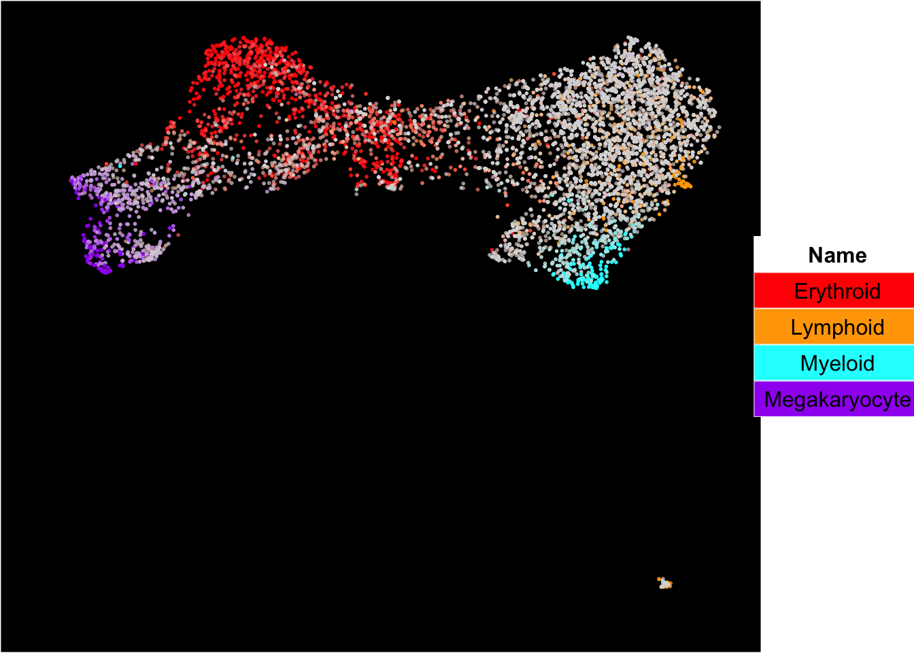
SingCellaR incorporates Force-directed graph for the visualization of cell differentiation trajectories.
runFA2_ForceDirectedGraph(human_HSPCs,n.dims.use = 20, useIntegrativeEmbeddings = T,integrative_method = "supervised_harmony",n.neighbors = 5,n.seed = 1,fa2_n_iter = 1000)## [1] "Building Annoy index with metric = euclidean , n_trees = 50"## 0% 10 20 30 40 50 60 70 80 90 100%## [----|----|----|----|----|----|----|----|----|----|## **************************************************|## [1] "Searching Annoy index, search_k = 500"## 0% 10 20 30 40 50 60 70 80 90 100%
## [----|----|----|----|----|----|----|----|----|----|
## **************************************************|## [1] "Processing fa2.."
## [1] "Force directed graph analysis is done!."plot_forceDirectedGraph_label_by_multiple_gene_sets(human_HSPCs,gmt.file = "../SingCellaR_example_datasets/Human_genesets/human.signature.genes.v1.gmt",
show_gene_sets = c("Erythroid","Lymphoid","Myeloid","Megakaryocyte"),
custom_color = c("red","orange","cyan","purple"),
isNormalizedByHouseKeeping = T,vertex.size = 1,edge.size = 0.05,
background.color = "black")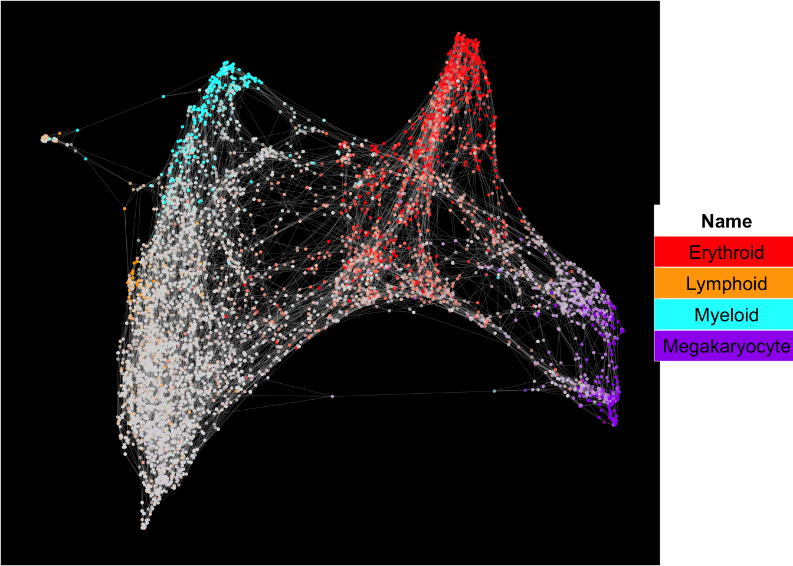
To run harmony integration, the harmony software must be installed https://github.com/immunogenomics/harmony.
runHarmony(human_HSPCs,covariates = c("sampleID"),n.dims.use = 20,harmony.max.iter = 20,n.seed = 1)## [1] "Harmony analysis is done!."SingCellaR::runUMAP(human_HSPCs,useIntegrativeEmbeddings = T, integrative_method = "harmony",n.dims.use = 20,
n.neighbors = 30,uwot.metric = "euclidean")## 17:47:34 UMAP embedding parameters a = 1.121 b = 1.057## 17:47:34 Read 5000 rows and found 20 numeric columns## 17:47:34 Using Annoy for neighbor search, n_neighbors = 30## 17:47:34 Building Annoy index with metric = euclidean, n_trees = 50## 0% 10 20 30 40 50 60 70 80 90 100%## [----|----|----|----|----|----|----|----|----|----|## **************************************************|
## 17:47:35 Writing NN index file to temp file /var/folders/c6/_w309xr54n7cphf9nw4x_ms40000gn/T//Rtmpovie3b/filed11245c48517
## 17:47:35 Searching Annoy index using 8 threads, search_k = 3000
## 17:47:35 Annoy recall = 100%
## 17:47:35 Commencing smooth kNN distance calibration using 8 threads with target n_neighbors = 30
## 17:47:36 Initializing from normalized Laplacian + noise (using irlba)
## 17:47:36 Commencing optimization for 500 epochs, with 217414 positive edges
## 17:47:43 Optimization finished## [1] "UMAP analysis is done!."plot_umap_label_by_a_feature_of_interest(human_HSPCs,feature = "sampleID",point.size = 0.5)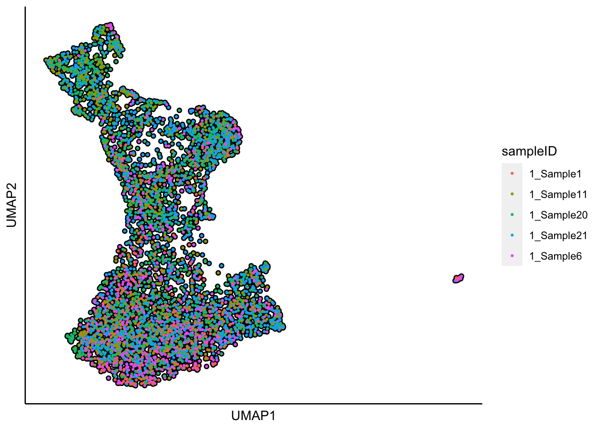
plot_umap_label_by_a_feature_of_interest(human_HSPCs,feature = "status",point.size = 0.5)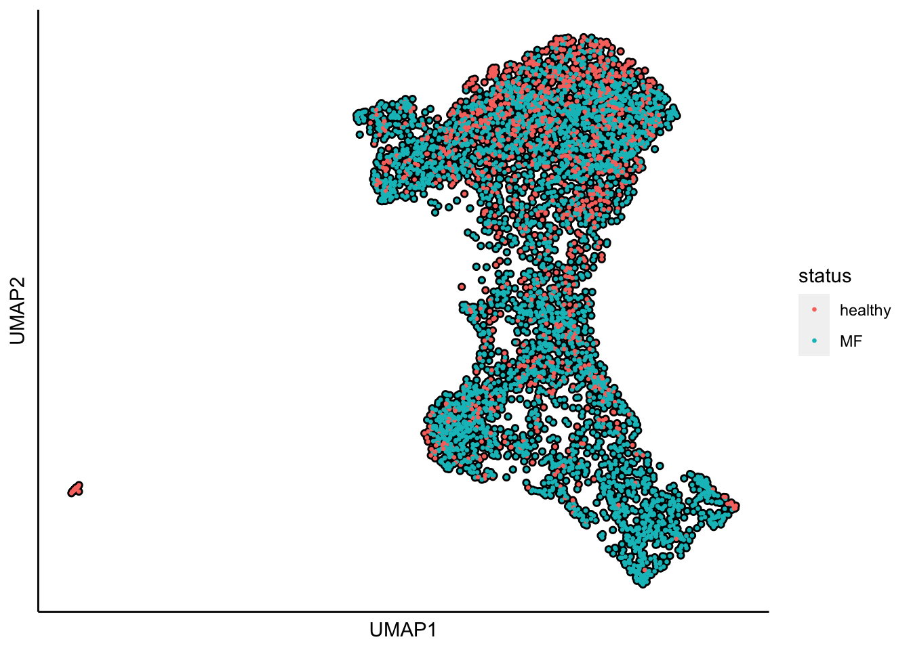
The plot below shows the superimposition of lineage gene scores from erythroid, myeloid, lymphoid, and megakaryocytic gene sets on top UMAP and force-directed graph respectively.
plot_umap_label_by_multiple_gene_sets(human_HSPCs,gmt.file = "../SingCellaR_example_datasets/Human_genesets/human.signature.genes.v1.gmt",
show_gene_sets = c("Erythroid","Lymphoid","Myeloid","Megakaryocyte"),
custom_color = c("red","orange","cyan","purple"),
isNormalizedByHouseKeeping = T,point.size = 1,background.color = "black")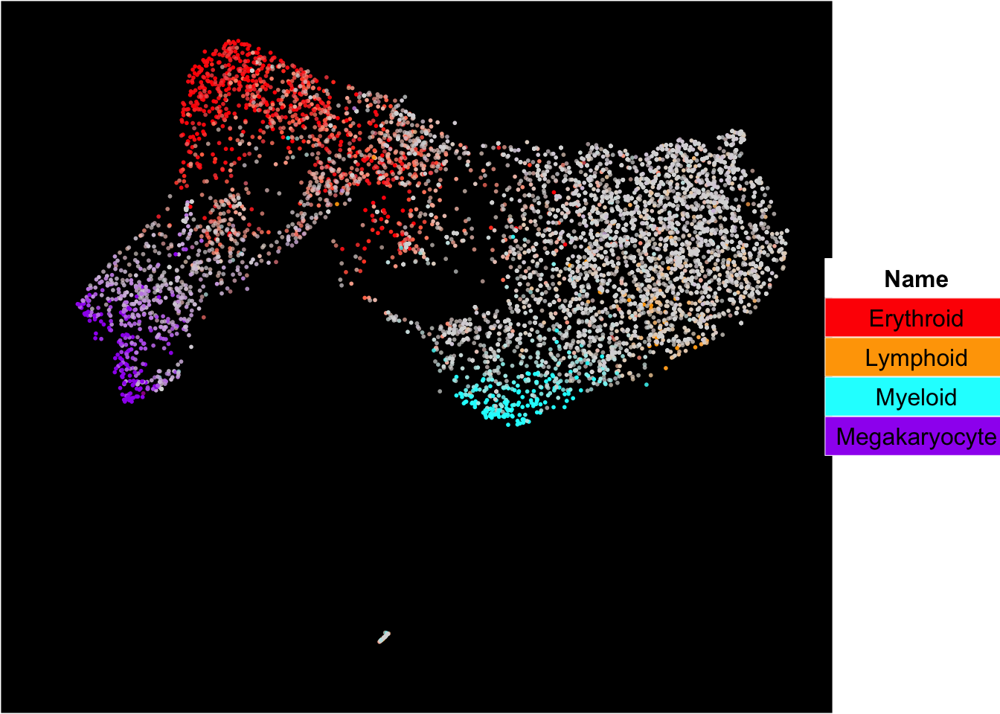
SingCellaR incorporates force-directed graph for the visualization of cellular trajectories.
runFA2_ForceDirectedGraph(human_HSPCs,n.dims.use = 20, useIntegrativeEmbeddings = T,integrative_method = "harmony",n.neighbors = 5,n.seed = 1,fa2_n_iter = 1000)## [1] "Building Annoy index with metric = euclidean , n_trees = 50"## 0% 10 20 30 40 50 60 70 80 90 100%## [----|----|----|----|----|----|----|----|----|----|## **************************************************|## [1] "Searching Annoy index, search_k = 500"## 0% 10 20 30 40 50 60 70 80 90 100%
## [----|----|----|----|----|----|----|----|----|----|
## **************************************************|## [1] "Processing fa2.."
## [1] "Force directed graph analysis is done!."plot_forceDirectedGraph_label_by_multiple_gene_sets(human_HSPCs,gmt.file = "../SingCellaR_example_datasets/Human_genesets/human.signature.genes.v1.gmt",
show_gene_sets = c("Erythroid","Lymphoid","Myeloid","Megakaryocyte"),
custom_color = c("red","orange","cyan","purple"),
isNormalizedByHouseKeeping = T,vertex.size = 1,edge.size = 0.1,
background.color = "black")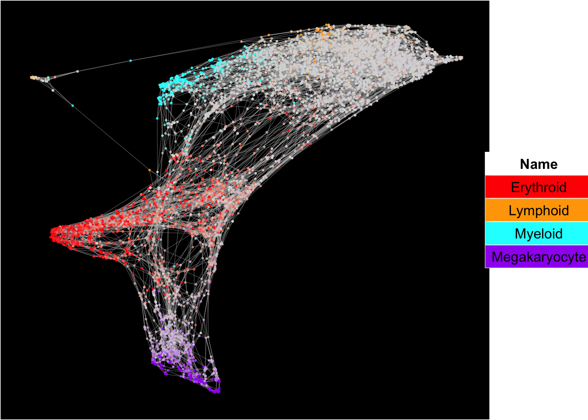
To run Seurat integration, Seurat software must be installed https://satijalab.org/seurat/install.html. The parameter ‘use.SingCellaR.varGenes’ is critical. If TRUE, Seurat will use highly variable genes from all variable genes detected by SingCellaR analysis (from individual donor). If FALSE, Seurat will identify highly variable genes by default.
library(Seurat)
meta.data<-get_cells_annotation(human_HSPCs)
rownames(meta.data)<-meta.data$Cell
runSeuratIntegration(human_HSPCs,Seurat.metadata=meta.data,n.dims.use = 20,
Seurat.split.by = "data_set",use.SingCellaR.varGenes = FALSE)##
|
| | 0%[1] "Process each Seurat object.."
##
|
|============== | 20%
|
|============================ | 40%
|
|========================================== | 60%
|
|======================================================== | 80%
|
|======================================================================| 100%[1] "This process will take time and requires large RAM depending on the number of cells in your integration."
## [1] "Seurat integrative analysis is done!."SingCellaR::runUMAP(human_HSPCs,useIntegrativeEmbeddings = T, integrative_method = "seurat",n.dims.use = 20,
n.neighbors = 30,uwot.metric = "euclidean")## 17:50:15 UMAP embedding parameters a = 1.121 b = 1.057## 17:50:15 Read 5000 rows and found 20 numeric columns## 17:50:15 Using Annoy for neighbor search, n_neighbors = 30## 17:50:15 Building Annoy index with metric = euclidean, n_trees = 50## 0% 10 20 30 40 50 60 70 80 90 100%## [----|----|----|----|----|----|----|----|----|----|## **************************************************|
## 17:50:16 Writing NN index file to temp file /var/folders/c6/_w309xr54n7cphf9nw4x_ms40000gn/T//Rtmpovie3b/filed1121517a448
## 17:50:16 Searching Annoy index using 8 threads, search_k = 3000
## 17:50:16 Annoy recall = 100%
## 17:50:17 Commencing smooth kNN distance calibration using 8 threads with target n_neighbors = 30
## 17:50:17 Initializing from normalized Laplacian + noise (using irlba)
## 17:50:17 Commencing optimization for 500 epochs, with 219184 positive edges
## 17:50:24 Optimization finished## [1] "UMAP analysis is done!."plot_umap_label_by_a_feature_of_interest(human_HSPCs,feature = "sampleID",point.size = 0.5)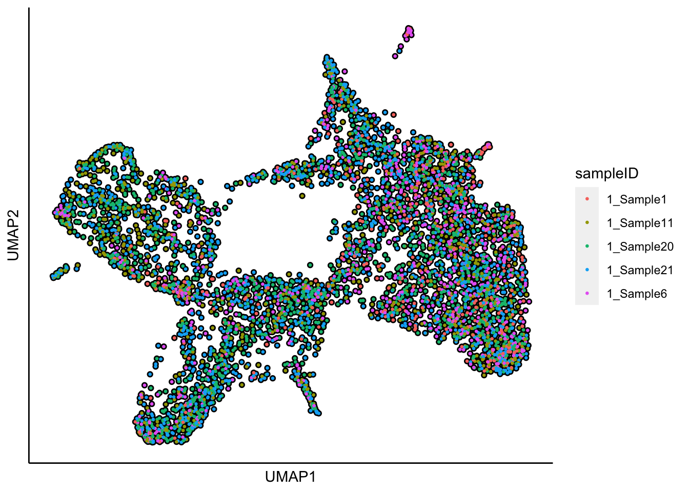
plot_umap_label_by_a_feature_of_interest(human_HSPCs,feature = "status",point.size = 0.5)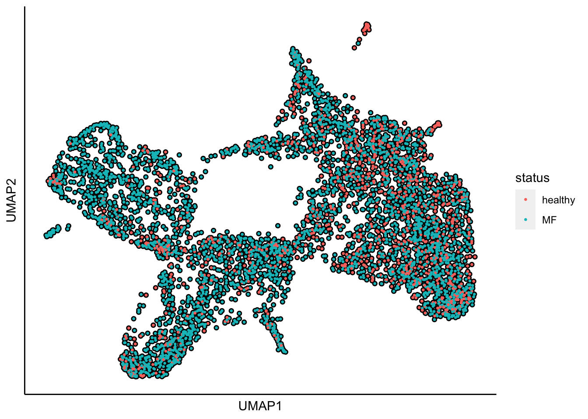
The plot below shows the superimposition of gene scores from erythroid, myeloid, lymphoid, and megakaryocytic gene sets on top UMAP and force-directed graph respectively.
plot_umap_label_by_multiple_gene_sets(human_HSPCs,gmt.file = "../SingCellaR_example_datasets/Human_genesets/human.signature.genes.v1.gmt",
show_gene_sets = c("Erythroid","Lymphoid","Myeloid","Megakaryocyte"),
custom_color = c("red","orange","cyan","purple"),
isNormalizedByHouseKeeping = T,point.size = 1,background.color = "black")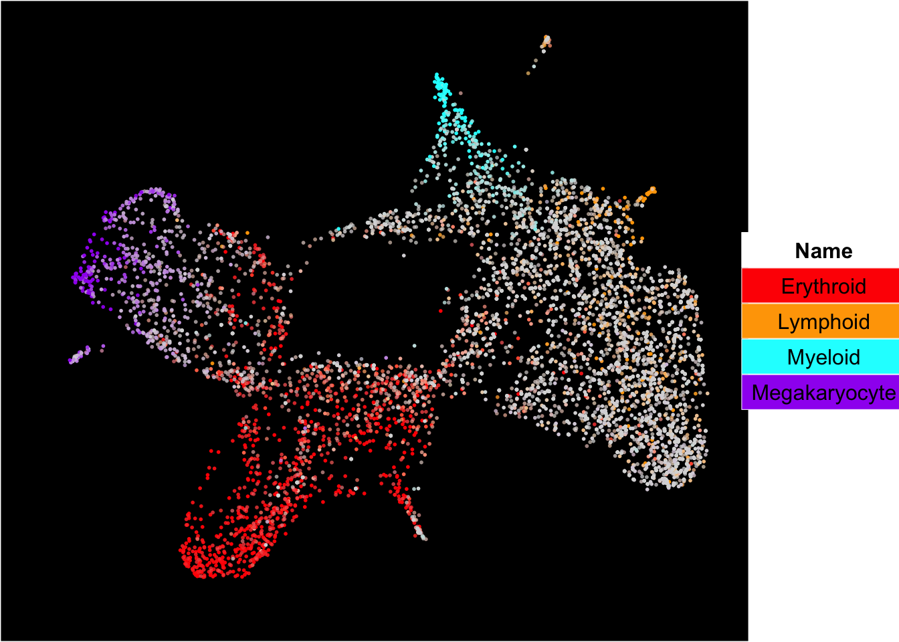
runFA2_ForceDirectedGraph(human_HSPCs,n.dims.use = 20, useIntegrativeEmbeddings = T,integrative_method = "seurat",n.neighbors = 5,n.seed = 1,fa2_n_iter = 1000)## [1] "Building Annoy index with metric = euclidean , n_trees = 50"## 0% 10 20 30 40 50 60 70 80 90 100%## [----|----|----|----|----|----|----|----|----|----|## **************************************************|## [1] "Searching Annoy index, search_k = 500"## 0% 10 20 30 40 50 60 70 80 90 100%
## [----|----|----|----|----|----|----|----|----|----|
## **************************************************|## [1] "Processing fa2.."
## [1] "Force directed graph analysis is done!."plot_forceDirectedGraph_label_by_multiple_gene_sets(human_HSPCs,gmt.file = "../SingCellaR_example_datasets/Human_genesets/human.signature.genes.v1.gmt",
show_gene_sets = c("Erythroid","Lymphoid","Myeloid","Megakaryocyte"),
custom_color = c("red","orange","cyan","purple"),
isNormalizedByHouseKeeping = T,vertex.size = 1,edge.size = 0.1,
background.color = "black")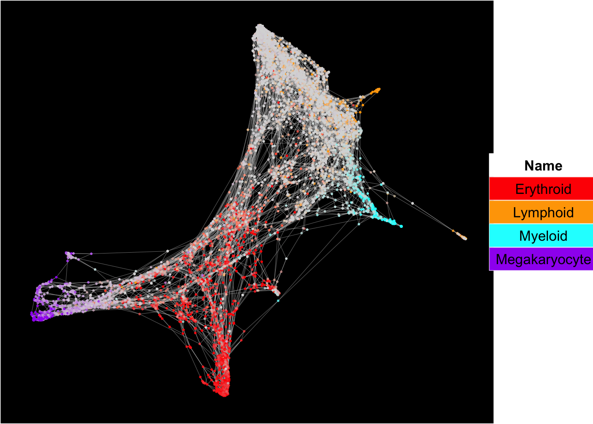
To run Liger’s online iNMF integration <(http://htmlpreview.github.io/?https://github.com/welch-lab/liger/blob/master/vignettes/online_iNMF_tutorial.html)>, Liger software must be installed https://github.com/welch-lab/liger.
library(rliger)
runLiger_online_iNMF(human_HSPCs,liger.k = 20)## [1] "This process will take time and requires large RAM depending on the number of cells in your integration."
## Starting Online iNMF...
##
|
|============== | 20%
|
|============================ | 40%
|
|========================================== | 60%
|
|======================================================== | 80%
|
|======================================================================| 100%
## Calculate metagene loadings...
## [1] "Liger analysis is done!."SingCellaR::runUMAP(human_HSPCs,useIntegrativeEmbeddings = T, integrative_method = "liger",n.dims.use = 20,
n.neighbors = 30,uwot.metric = "euclidean")## 17:51:16 UMAP embedding parameters a = 1.121 b = 1.057## 17:51:16 Read 5000 rows and found 20 numeric columns## 17:51:16 Using Annoy for neighbor search, n_neighbors = 30## 17:51:16 Building Annoy index with metric = euclidean, n_trees = 50## 0% 10 20 30 40 50 60 70 80 90 100%## [----|----|----|----|----|----|----|----|----|----|## **************************************************|
## 17:51:17 Writing NN index file to temp file /var/folders/c6/_w309xr54n7cphf9nw4x_ms40000gn/T//Rtmpovie3b/filed112b052be4
## 17:51:17 Searching Annoy index using 8 threads, search_k = 3000
## 17:51:17 Annoy recall = 100%
## 17:51:18 Commencing smooth kNN distance calibration using 8 threads with target n_neighbors = 30
## 17:51:18 Initializing from normalized Laplacian + noise (using irlba)
## 17:51:18 Commencing optimization for 500 epochs, with 211052 positive edges
## 17:51:25 Optimization finished## [1] "UMAP analysis is done!."plot_umap_label_by_a_feature_of_interest(human_HSPCs,feature = "sampleID",point.size = 0.5)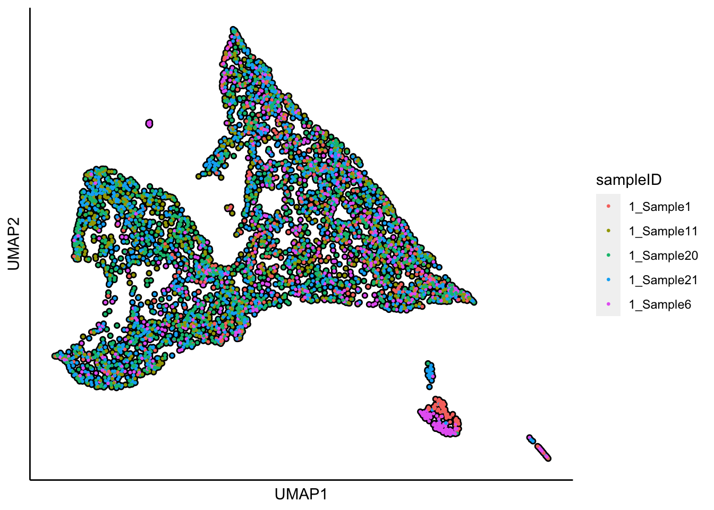
plot_umap_label_by_a_feature_of_interest(human_HSPCs,feature = "status",point.size = 0.5)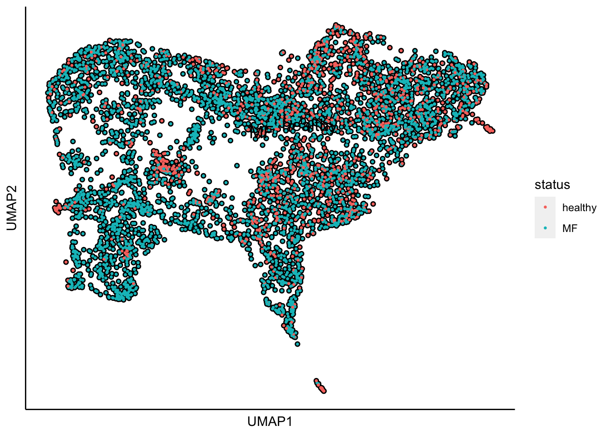
The plot below shows the superimposition of gene scores from erythroid, myeloid, lymphoid, and megakaryocytic gene sets on top UMAP and force-directed graph respectively.
plot_umap_label_by_multiple_gene_sets(human_HSPCs,gmt.file = "../SingCellaR_example_datasets/Human_genesets/human.signature.genes.v1.gmt",
show_gene_sets = c("Erythroid","Lymphoid","Myeloid","Megakaryocyte"),
custom_color = c("red","orange","cyan","purple"),
isNormalizedByHouseKeeping = T,point.size = 1,background.color = "black")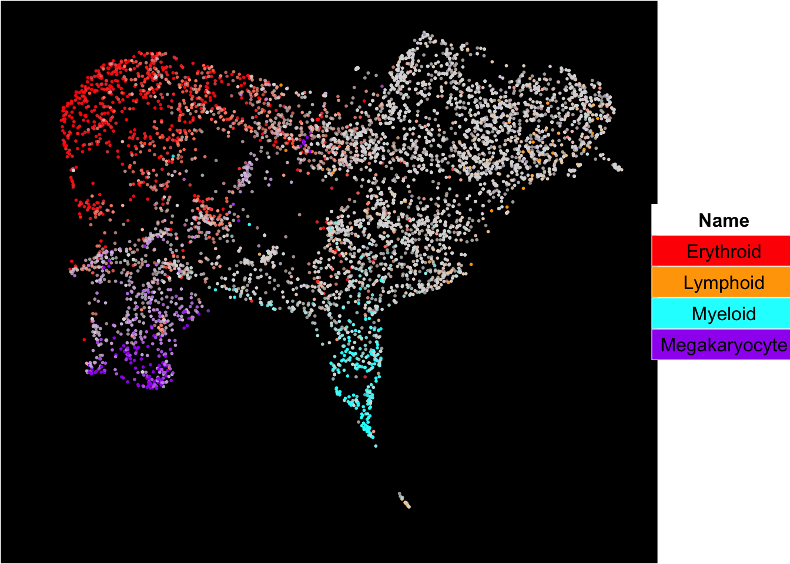
To run scanorama integration, Scanorama software must be installed https://github.com/brianhie/scanorama.
runScanorama(human_HSPCs)## [1] "This process will take time and requires large RAM depending on the number of cells in your integration."
## [1] "Scanorama analysis is done!."runPCA(human_HSPCs,use.scanorama.integrative.matrix = T,use.components = 50)## [1] "The scanorama matrix will be used for PCA!"
## [1] "PCA analysis is done!."SingCellaR::runUMAP(human_HSPCs,dim_reduction_method = "pca",
n.dims.use = 20,n.neighbors = 30,uwot.metric = "euclidean")## 17:51:39 UMAP embedding parameters a = 1.121 b = 1.057## 17:51:39 Read 5000 rows and found 20 numeric columns## 17:51:39 Using Annoy for neighbor search, n_neighbors = 30## 17:51:39 Building Annoy index with metric = euclidean, n_trees = 50## 0% 10 20 30 40 50 60 70 80 90 100%## [----|----|----|----|----|----|----|----|----|----|## **************************************************|
## 17:51:40 Writing NN index file to temp file /var/folders/c6/_w309xr54n7cphf9nw4x_ms40000gn/T//Rtmpovie3b/filed1125eae38ee
## 17:51:40 Searching Annoy index using 8 threads, search_k = 3000
## 17:51:40 Annoy recall = 100%
## 17:51:40 Commencing smooth kNN distance calibration using 8 threads with target n_neighbors = 30
## 17:51:41 Initializing from normalized Laplacian + noise (using irlba)
## 17:51:41 Commencing optimization for 500 epochs, with 224644 positive edges
## 17:51:48 Optimization finished## [1] "UMAP analysis is done!."plot_umap_label_by_a_feature_of_interest(human_HSPCs,feature = "sampleID",point.size = 0.5)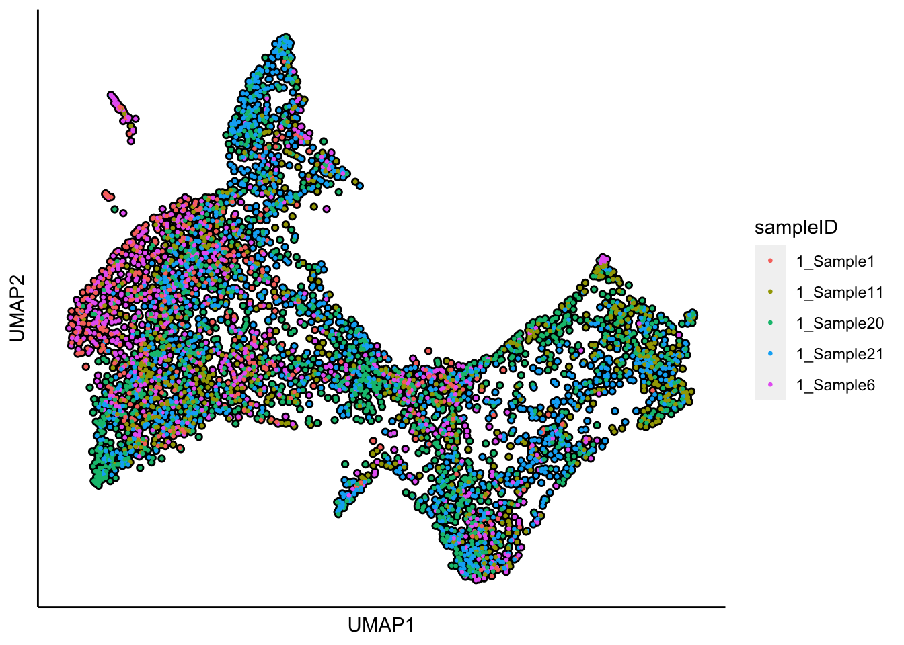
plot_umap_label_by_a_feature_of_interest(human_HSPCs,feature = "status",point.size = 0.5)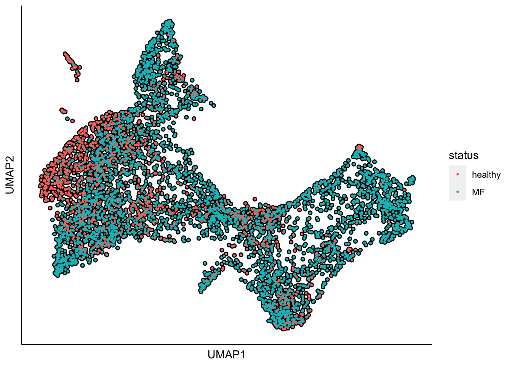
The plot below shows the superimposition of gene scores from erythroid, myeloid, lymphoid, and megakaryocytic gene sets on top UMAP and force-directed graph respectively.
plot_umap_label_by_multiple_gene_sets(human_HSPCs,gmt.file = "../SingCellaR_example_datasets/Human_genesets/human.signature.genes.v1.gmt",
show_gene_sets = c("Erythroid","Lymphoid","Myeloid","Megakaryocyte"),
custom_color = c("red","orange","cyan","purple"),
isNormalizedByHouseKeeping = T,point.size = 1,background.color = "black")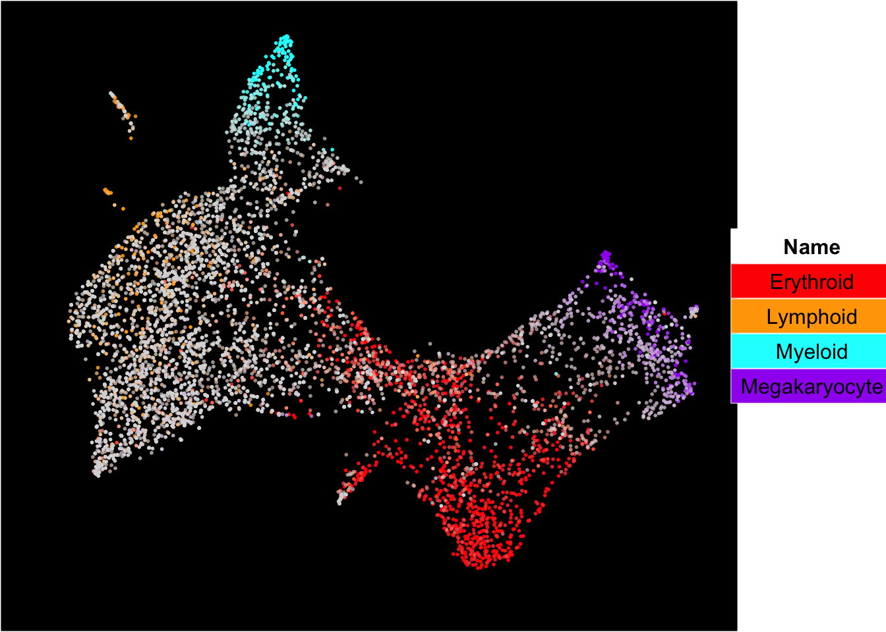
To run Combat, the SVA software must be installed https://bioconductor.org/packages/release/bioc/html/sva.html.
library(sva)## Loading required package: mgcv## Loading required package: nlme## This is mgcv 1.8-40. For overview type 'help("mgcv-package")'.## Loading required package: genefilter##
## Attaching package: 'genefilter'## The following object is masked from 'package:patchwork':
##
## area## Loading required package: BiocParallelrunCombat(human_HSPCs,use.reduced_dim = F,batch_identifier = "sampleID")## Found 12 genes with uniform expression within a single batch (all zeros); these will not be adjusted for batch.## Found5batches## Adjusting for0covariate(s) or covariate level(s)## Standardizing Data across genes## Fitting L/S model and finding priors## Finding parametric adjustments## Adjusting the Data## [1] "Combat analysis is done!"
## [1] "The batch-free matrix is now in the regressout_matrix slot!"
## [1] "Please continue PCA analysis with 'use.regressout.data=T'."runPCA(human_HSPCs,use.regressout.data = T)## [1] "PCA analysis is done!."SingCellaR::runUMAP(human_HSPCs,dim_reduction_method = "pca",n.dims.use = 20, n.neighbors = 20,uwot.metric = "euclidean")## 17:51:57 UMAP embedding parameters a = 1.121 b = 1.057## 17:51:57 Read 5000 rows and found 20 numeric columns## 17:51:57 Using Annoy for neighbor search, n_neighbors = 20## 17:51:57 Building Annoy index with metric = euclidean, n_trees = 50## 0% 10 20 30 40 50 60 70 80 90 100%## [----|----|----|----|----|----|----|----|----|----|## **************************************************|
## 17:51:57 Writing NN index file to temp file /var/folders/c6/_w309xr54n7cphf9nw4x_ms40000gn/T//Rtmpovie3b/filed1123bae53f2
## 17:51:57 Searching Annoy index using 8 threads, search_k = 2000
## 17:51:57 Annoy recall = 100%
## 17:51:58 Commencing smooth kNN distance calibration using 8 threads with target n_neighbors = 20
## 17:51:59 Initializing from normalized Laplacian + noise (using irlba)
## 17:51:59 Commencing optimization for 500 epochs, with 141614 positive edges
## 17:52:05 Optimization finished## [1] "UMAP analysis is done!."plot_umap_label_by_a_feature_of_interest(human_HSPCs,feature = "sampleID",point.size = 0.5)plot_umap_label_by_a_feature_of_interest(human_HSPCs,feature = "status",point.size = 0.5)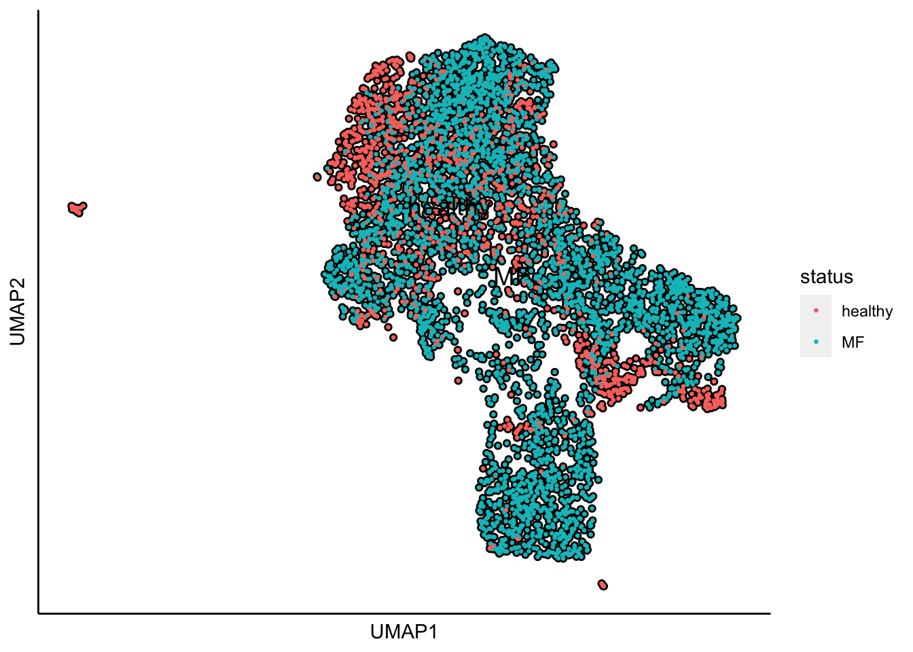
The plot below shows the superimposition of gene scores from erythroid, myeloid, lymphoid, and megakaryocytic gene sets on top UMAP and force-directed graph respectively.
plot_umap_label_by_multiple_gene_sets(human_HSPCs,gmt.file = "../SingCellaR_example_datasets/Human_genesets/human.signature.genes.v1.gmt",
show_gene_sets = c("Erythroid","Lymphoid","Myeloid","Megakaryocyte"),
custom_color = c("red","orange","cyan","purple"),
isNormalizedByHouseKeeping = T,point.size = 1,background.color = "black")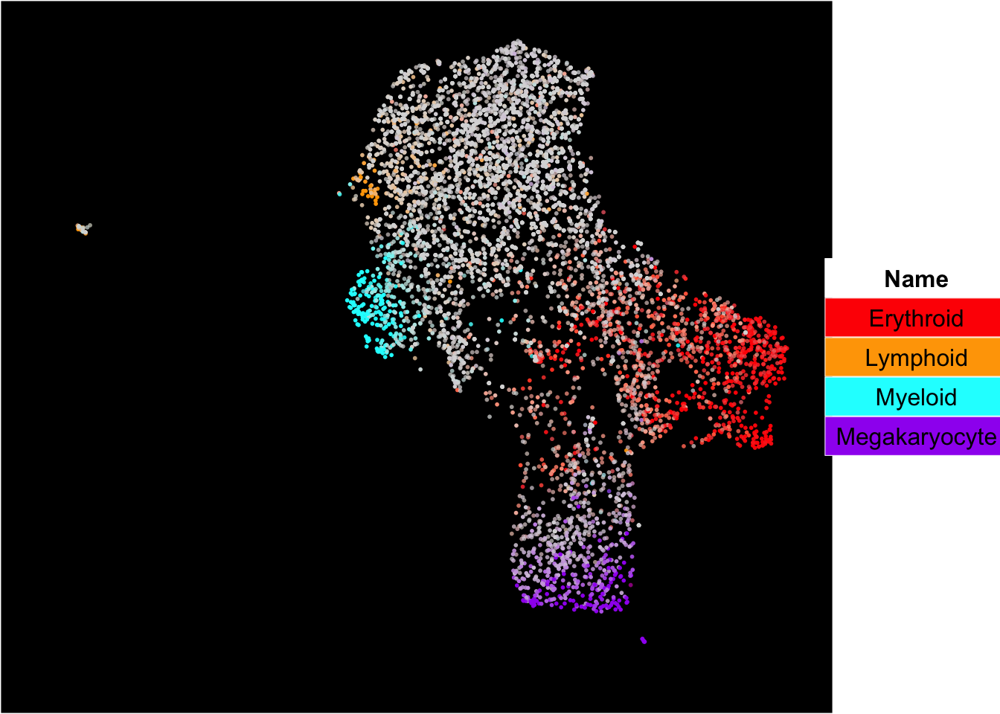
To run Limma, the SVA software must be installed https://bioconductor.org/packages/release/bioc/html/sva.html.
remove_unwanted_confounders(human_HSPCs,residualModelFormulaStr="~UMI_count+percent_mito+sampleID")##
|
| | 0%
|
|==== | 6%
|
|======== | 12%
|
|============ | 18%
|
|================ | 24%
|
|===================== | 29%
|
|========================= | 35%
|
|============================= | 41%
|
|================================= | 47%
|
|===================================== | 53%
|
|========================================= | 59%
|
|============================================= | 65%
|
|================================================= | 71%
|
|====================================================== | 76%
|
|========================================================== | 82%
|
|============================================================== | 88%
|
|================================================================== | 94%
|
|======================================================================| 100%
## [1] "Removing unwanted sources of variation is done!"runPCA(human_HSPCs,use.regressout.data = T)## [1] "PCA analysis is done!."SingCellaR::runUMAP(human_HSPCs,dim_reduction_method = "pca",n.dims.use = 20, n.neighbors = 20,uwot.metric = "euclidean")## 17:52:39 UMAP embedding parameters a = 1.121 b = 1.057## 17:52:39 Read 5000 rows and found 20 numeric columns## 17:52:39 Using Annoy for neighbor search, n_neighbors = 20## 17:52:39 Building Annoy index with metric = euclidean, n_trees = 50## 0% 10 20 30 40 50 60 70 80 90 100%## [----|----|----|----|----|----|----|----|----|----|## **************************************************|
## 17:52:39 Writing NN index file to temp file /var/folders/c6/_w309xr54n7cphf9nw4x_ms40000gn/T//Rtmpovie3b/filed112602fd388
## 17:52:39 Searching Annoy index using 8 threads, search_k = 2000
## 17:52:40 Annoy recall = 100%
## 17:52:40 Commencing smooth kNN distance calibration using 8 threads with target n_neighbors = 20
## 17:52:41 Initializing from normalized Laplacian + noise (using irlba)
## 17:52:41 Commencing optimization for 500 epochs, with 142244 positive edges
## 17:52:47 Optimization finished## [1] "UMAP analysis is done!."plot_umap_label_by_a_feature_of_interest(human_HSPCs,feature = "sampleID",point.size = 0.5)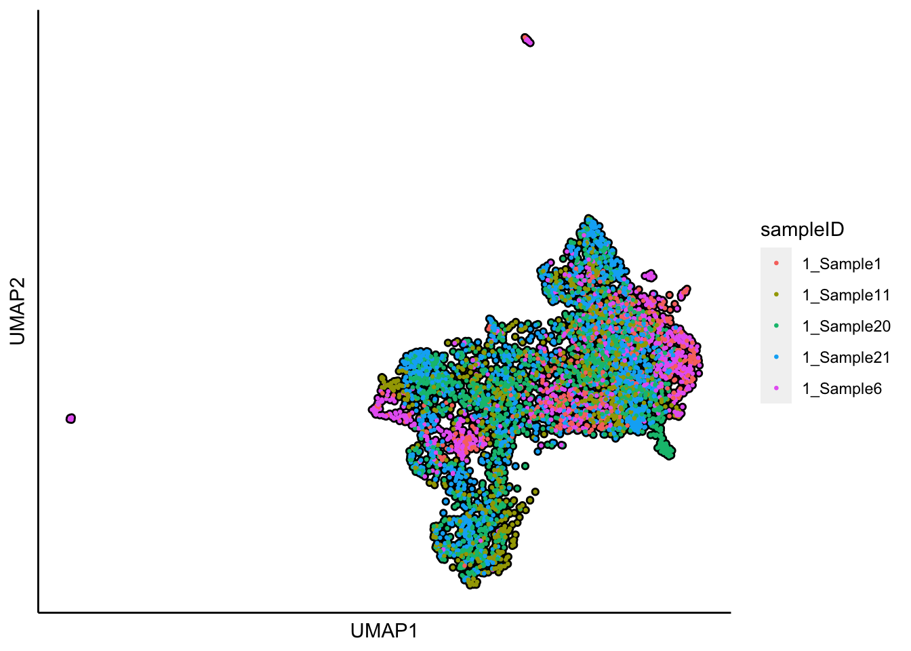
plot_umap_label_by_a_feature_of_interest(human_HSPCs,feature = "status",point.size = 0.5)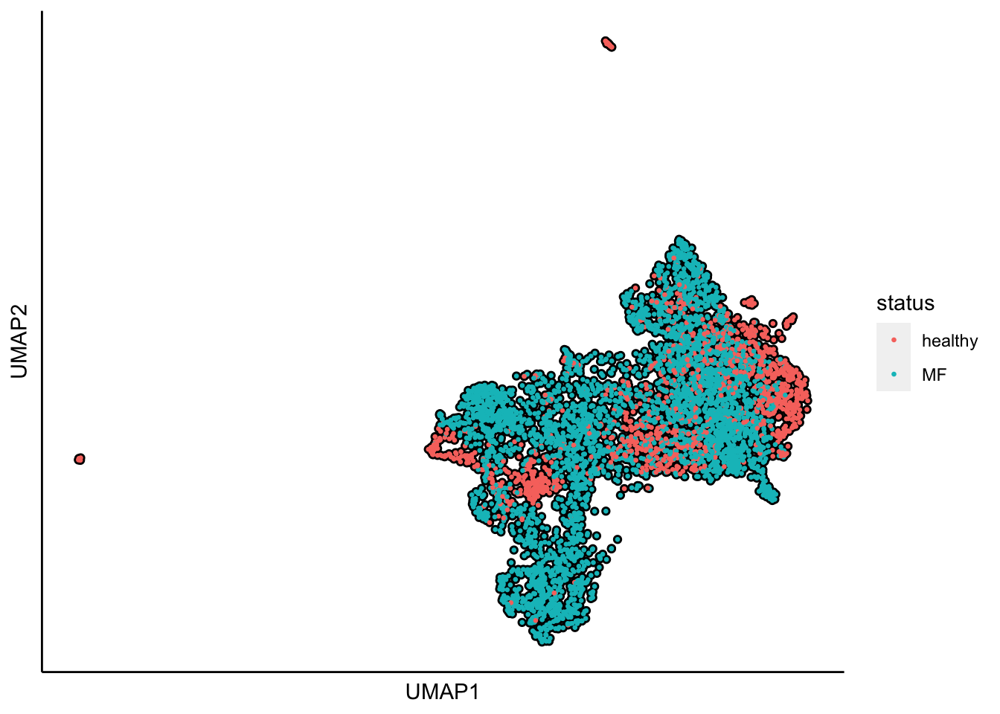
The plot below shows the superimposition of gene scores from erythroid, myeloid, lymphoid, and megakaryocytic gene sets on top UMAP and force-directed graph respectively.
plot_umap_label_by_multiple_gene_sets(human_HSPCs,gmt.file = "../SingCellaR_example_datasets/Human_genesets/human.signature.genes.v1.gmt",
show_gene_sets = c("Erythroid","Lymphoid","Myeloid","Megakaryocyte"),
custom_color = c("red","orange","cyan","purple"),
isNormalizedByHouseKeeping = T,point.size = 1,background.color = "black")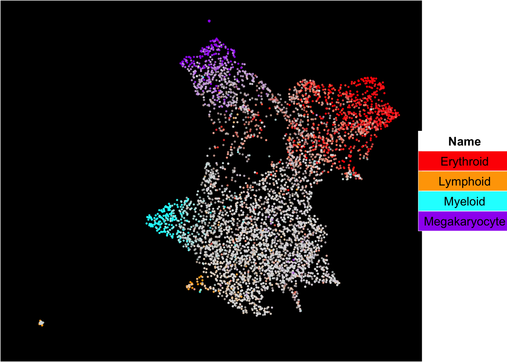
save(human_HSPCs,file="../SingCellaR_example_datasets/Psaila_et_al/SingCellaR_objects/human_HSPCs_v0.1.SingCellaR.rdata")